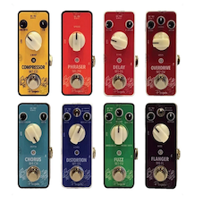
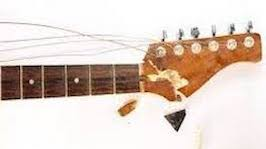

Productos
Guitarras - Vintage Series
Guitarras Vintage de las decadas del '60 y del '70. Relic series
Guitarras - Signature Series
Ediciones 195, 335 y Joe Pass signature. Archtops, Semihollows

Baterias - Premier Series
Kit Completo de Baterias 4, 5 y 6 cuerpos. Supraphonic series

Pedales - Mooer Series
Serie completa de Efectos. Delay, Reverb, Chorus, Distortion, Phaser
Servicios


- Nos dedicamos a la Compra y Venta de instrumentos de colección y series exclusivas de los años dorados de las Fabricas de Gibson y Fender.
- Restauramos en nuestro taller todo tipo de roturas de neck, body o componentes de tu instrumento.